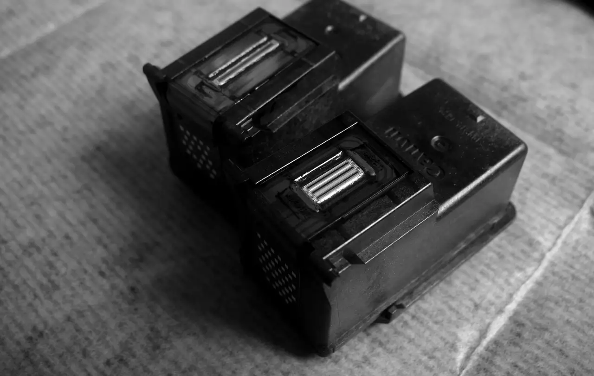

Sinds 2005
Inkstation
Inktpatronen en lasertoners voor een hele scherpe prijs, vaak veel goedkoper dan de webshops. Mooie pasfoto's en portretfoto's, ook van baby's. En u kunt hier uw rijbewijs digitaal verlengen en oude video's laten digitaliseren.
Ma 13:00–17:30 · di–vr 10:00–17:30
Inkt & lasertoner
Inktvoorminder.
Inktpatronen en lasertoners voor een hele scherpe prijs. Vooral setjes zijn hier vaak veel goedkoper dan bij 123inkt, MediaMarkt en andere winkels. Gewoon in de winkel, zonder verzendkosten.
- InktpatronenLos of als setje met 4 kleuren, voor Epson, Brother, Canon en HP. Neem uw lege patroon mee, dan heeft u zeker de goede.
- LasertonersZeer voordelig. Vraag vrijblijvend een prijsopgave: het verschil kan flink zijn.
- RefillUw lege Canon- of HP-patroon voordelig laten navullen.
Setjes vaak veel goedkoper dan bij 123inkt of MediaMarkt

Pasfoto's & portretten
Pasfoto's enportretfoto's,ook voor baby's.
Wij maken mooie, geschikte pasfoto's voor uw paspoort, ID-kaart en rijbewijs. En net zo goed voor de baby: we nemen er de tijd voor.
- Paspoort & IDVolgens de eisen van de overheid, 35 × 45 mm.
- Baby's & kinderenGewoon welkom, ook als het even niet meezit.
- Portretfoto'sNaast ID-foto's maken we ook mooie portretfoto's van u en/of uw kinderen. Voor thuis, of digitaal voor bijvoorbeeld LinkedIn.
20 jaar Inkstation: een portretfoto, ingelijst, voor maar €10. Tijdelijke actie.

Rijbewijs verlengen
Rijbewijsverlengen.Begint hier.
Uw rijbewijs veilig digitaal verlengen doen we al jaren. Uw foto en handtekening gaan digitaal naar de RDW: geen losse pasfoto nodig en geen extra afspraak op het gemeentehuis.
- Foto en handtekeningWij maken uw pasfoto en nemen uw handtekening digitaal af. Met uw toestemming gaan ze direct naar de RDW.
- Online aanvragenU krijgt een aanvraagcode per mail of sms en verlengt online op rdw.nl.
- OphalenNa ongeveer twee werkdagen haalt u uw nieuwe rijbewijs op bij de gemeente.
Klaar in ongeveer twee werkdagen

Digitaliseren
Oudevideo's?Op USB.
Super 8-films, videobanden, audio en dvd's: Scanpaleis zet ze over op USB of dvd. U levert alles hier in de winkel in en krijgt het daarna netjes thuisbezorgd.
- InleverenBreng uw films, banden of audio naar Inkstation in de Passage.
- DigitaliserenScanpaleis zet alles over naar USB of dvd.
- ThuisbezorgdDaarna krijgt u alles netjes thuis bezorgd.
Officieel inleverpunt van Scanpaleis

Verder in de winkel
- Papier
- Fotopapier
- Lamineerhoezen
- USB-sticks
- SD-kaarten
- Printers
DHL-afgiftepunt. Pakket versturen of retourneren? Lever het hier in.
Reviews op Google
Geduldig.Vakman.Top service.
- “De meneer was enorm geduldig en nam alle tijd!” Celina
- “Rens is een vakman.” Peter
- “Ook voor baby's kan je gewoon terecht. Top service.” Naw
- “Een prima zaak, eigenaar denkt mee en een vriendelijke sfeer.” Review op Google
- “Een leuk contact met de fotograaf levert een vele malen betere foto op.” Review op Google
Gemiddeld op Google, uit 110 reviews
Alle reviews lezenPassage 63 · 2741 HB Waddinxveen
Komlangs.
- Maandag
- 13:00 – 17:30
- Dinsdag t/m vrijdag
- 10:00 – 17:30
- Zaterdag en zondag
- Gesloten
inkstation.waddinxveen@gmail.com · Ook DHL-afgiftepunt